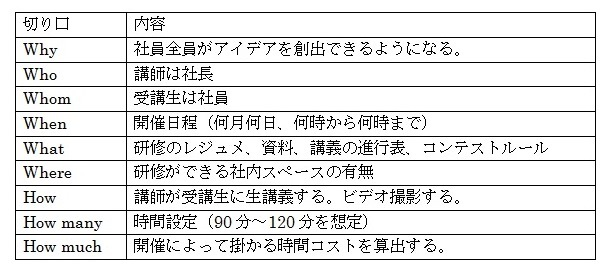

| 新規事業のアイデアをつくる方法 | |
| 奥村 政治 | |
| (2018) | |
はじめに
「新規事業？ やってみたいけど、アイデアないんだよね」
新規事業について経営者に質問すると、こんな答えが返ってくることがあります。
あなたは、この本に興味を持ちました。「新規事業、アイデア」という言葉に反応したのかもしれません。あるいは、日頃から問題意識を持っていて「良いアイデアをつくって、新規事業を立ち上げたい！」という前向きな気持ちが湧き上がったのかもしれません。
ただ、中には「自分には特別な才能や能力を持っていないけれど、アイデアをつくることができるのか？」と考えたり、「良いアイデアをつくれても、新規事業の企画をつくるのは難しいのではないか？」と思ったりして、本を読む前から後向きになっている場合もあります。
では、なぜ、アイデアがつくれないのでしょうか？
一つ目の理由は、単純にアイデアをつくる方法を知らないからです。そして、二つ目の理由は、アイデアをつくる方法を知っているけど、活用していないからです。
そこで、この本では、アイデアをできるだけ簡単につくる方法を掲載しました。最初のうちは指示どおりにやってみてください。慣れてくれば、アイデアをつくることが楽しくなってきます。逆に言えば、アイデアを楽しくつくれないようでは、新規事業の企画も楽しくつくることができません。楽しくない新規事業で作られた商品・サービスを、お客さんが買ってくれることは難しいと思います。
ですから、楽しんでアイデアをつくってください。アイデアをつくるだけであれば、お金はかかりません。スキマ時間を使って、どんどんつくってください。やがて、アイデアをつくることが日常的になっているでしょう。
この本を読むことで、あなたは、特別な才能や能力がなくても、アイデアをつくる方法をマスターできますが、他にも...
・新規事業を検討するタイミングが、相対的に理解できます。
・新規事業と新商品開発の違いがハッキリします。
・新規事業のアイデアを社員がつくる、その仕掛けがわかります。
などのメリットを手に入れることができます。
読み終えて「なるほど！」と思われたときには、ノートでも、コピーの裏紙でもいいので、実際に手を動かしてやってみてください。面白いアイデアを生み出し、素晴らしい新規事業を立ち上げて、世の中に貢献していただくことを期待しています！
第1章 新規事業を考えて実行するのは誰なのか
(1) 時代の流れを読む
戦前、豊田自動織機製作所という会社内に自動車部が設立されました。この部署が「トヨタ自動車」の起源になります。つまり、自動織機をつくる会社の「新規事業」としてスタートしたのです。最初は乗用車ではなくて、トラックを製造販売していました。
自動織機をつくっている会社が、なぜ、自動車の製造販売に乗り出したのか？
やがて、自動車の大衆化時代がやってくる。それまでに国産自動車を作って販売できるようになる。その当時のトヨタの経営者は、「時代を読む」優れた感覚と「国産自動車のパイオニアになる」という気概に満ちていたのではないかと思います。
時代の流れを読んで対応し、自社の主力事業をチェンジして、会社を継続していくことは重要です。トヨタを筆頭に、歴史ある大企業は、時代の変化を先取りして、既存事業から新規事業に乗り換えて成長してきました。
ある意味、新規事業を考えて実行することは、経営者にしかできない重要な仕事ではないでしょうか？
次節では、既存事業の業績と新規事業の検討の有無について、図表を使って分かりやすく説明します。
(2) 新規事業を検討するタイミング

Aは、既存事業の業績が好調です。しかし、このまま状況が続くことはないと考えています。次世代においても会社が存続できるように、新規事業を検討しているのです。会社の方向性として、健全であると思います。
Bは、既存事業の業績が良くないので、新たな収益の柱として、新規事業を検討しています。新規事業を行うには、ヒト・モノ・カネといった経営資源の投入が必要です。特に、新たな資金を投入することは、業績が良くない中では難しいかもしれません。本当は、業績が良い時に新規事業を行うことを考えてもらえれば、「ベストタイミングであった」と言えます。
Cは、既存事業の業績が好調なので、新規事業を検討する必要がないと考えています。この場合、次の質問が役に立ちます。
「既存事業の業績好調は未来永劫つづいていくのか？」
「新規事業を検討しない理由は何なのか？」
一つ目の質問の答えは明白です。つづくことはありません。では、好調である今の段階で、不調になったときの対応を考えているかと言えば、まず考えていないでしょう。そして、本当に不調になった時に慌てるのです。
二つ目の質問ですが、新規事業をやらない理由を聞いていません。検討しない理由を聞いています。例えば、検討した結果、新規事業は実施しないが、新商品開発や新市場開拓（2章で解説します）を行うのであれば、検討した価値があったと言えます。方向性も定まりますので、この後の行動も素早いはずです。つまり、現状の既存事業の業績好調にあぐらをかいて、次の一手について何も考えていないことが問題なのです。
Dは、既存事業の業績が思わしくなく、新規事業についても検討していません。後継者がいない場合、経営者としては引退と共に廃業を考えていると思います。後継者がいる場合、将来に対する不安と怖れから新規事業を検討する余裕がないと考えられます。
A～Dに該当する会社があると思いますが、どれにも該当しない会社もあるはずです。どちらにしても、自社の方向性を考えるキッカケになれば幸いです。この流れに沿って、次章では「新規事業とは何か」について、市場（顧客）と商品・サービスの観点から解説します。
第2章 新商品を開発することが新規事業ではない
(1) 新規事業の定義づけ
まずは、以下の図表をご覧ください。ここでは、新規市場（顧客）に対して新規の商品・サービスを販売するDのカテゴリーを新規事業として定義します。さらに、A～Cのカテゴリーが新規事業ではない理由についても解説します。
Aは既存市場（顧客）に対して、既存の商品・サービスを販売するカテゴリーになります。言うまでもありませんが、これは新規事業ではありません。
Bは既存市場（顧客）に対して、新規の商品・サービスを販売するカテゴリーになります。これは新商品開発に該当しますので、新規事業にはなりません。例えば、今ある既存商品では外部環境の変化（顧客ニーズの多様化・高度化、競合他社の動き、法規制の改正・新設等）に対応できなくなることが予想される場合、新商品を開発して次の主力商品として育成します。
発売当初はフレッシュな新商品も時間の経過とともに既存商品化していきます。つまり、Aのカテゴリーに移行することになります。
Cは新規市場（顧客）に対して、既存の商品・サービスを販売するカテゴリーになります。これは新市場開拓に該当しますので、新規事業にはなりません。例えば、日本国内で製品をつくって販売していたけれど、同じ製品を海外に輸出することで、新市場を開拓します。
こうした新市場も時間の経過とともに既存市場化していきますので、Aのカテゴリーに移行していきます。
DはAに移行することはありません。つまり、AとDは同じ部署もしくは事業部で行うのではなく、別の部署・別の事業部で実施することになります。
ここまでの解説では、ピンとこないかもしれません。新規事業のイメージを掴んでいただくため、次節では「陸王」というテレビドラマのワンシーンを使って説明します。まだ、観ていないのであれば、参考になるところがありますので、DVDをレンタルもしくは購入して、是非ご覧ください。
(2) 新商品開発と新規事業の違いを「陸王」から考察する
資金調達やアッパー素材の探索など、山積みになっている問題について、宮沢社長は頭を抱えています。そうした中、家族で食事している時に新しいアイデアを思いつきます。
既存の地下足袋はゴム底ですが、これを陸王で使っているシルクレイにすることで、今までよりも軽くて丈夫な地下足袋を作ることができます。
アッパー素材は既存の地下足袋のものでOKですし、ソール成型もランニングシューズほどのクオリティは要求されません。
陸王はランニングシューズなので、新しい販路（スポーツショップや大型量販店など）の開拓が必要になりますが、新しい地下足袋は既存の販路で売ることができます。この新しい地下足袋が売れれば、資金的に余裕が生まれ、陸王の開発が続けられます。
宮沢社長はプロジェクト会議の中で、新しい地下足袋を開発して売ることを提案します。前向きな取り組みにメンバー全員が賛成。いつも反対意見を述べる富島専務も、積極的な意見を述べて賛意を示します。
新しい地下足袋は「足軽大将」を名付けられ、生産が追いつかないくらいのヒット商品になります。陸王の開発を続けていたことで、足軽大将が生まれたことを理解した富島専務は、陸王の開発継続を認めます。
ここで、A～Dの枠組みを上記のストーリーに当てはめてみます。
まず、Aは既存市場（顧客）に対して既存の商品を販売しているカテゴリーです。つまり、既存商品である足袋を既存の販路で売っていることになります。
Bは既存市場（顧客）に対して新規の商品を販売するカテゴリーです。新しい地下足袋である「足軽大将」は、このカテゴリーに位置付けられます。
Cは新規市場（顧客）に対して既存の商品を販売するカテゴリーです。これは、新市場開拓に該当しますが、ドラマの中では描かれていません。衰退商品である足袋について、時間もコストも掛かる新市場開拓に取り組むことはないからです。
Dは新規市場（顧客）に対して新規の商品を販売するカテゴリーですが、開発中の陸王はここに位置付けられます。つまり、新規事業に該当することになります。
陸王の事業化が成功した場合、社員を増やして事業を行うのであれば、足袋事業部とシューズ事業部という形で、組織を分けるほうがいいと思います。お客さんも商品もそれぞれ違いますので、それぞれの部門で戦略と戦術を考えて実行するほうが効果的だからです。
次章では、新規事業を導入するための主なルートについて、考察したいと思います。
第3章 新規事業導入ルートの是非
(1) 社長アイデアの是非
社長自身が温めていたアイデアを社内で否定する者はいないと考えられます。なので、その内容をしっかり検証して、是非の判断を社長自身が行う必要があります。
自らのアイデアであっても「ダメ！」と判断しなければならない場合があると思います。その時には勇気をもって削除してください。
アイデアを検証した結果、2章で定義づけしたB（新商品開発）やC（新市場開拓）の場合、有望な内容であれば、既存事業の枠組みの中で事業化を進めてください。
アイデアが、D（新規事業）であることが確認できましたら、どのような商品・サービスを作っていくのかを検討します。アイデアを、そのまま商品化・サービス化することが難しい場合、現状の視点を変えてみます。視点を変える手法は様々ありますが、一例として「オズボーンのチェックリスト法」に掲載されている切り口を示しておきます。
①
他に使いみちは
②
応用できないか
③
修正したら
④
拡大したら
⑤
縮小したら
⑥
代用したら
⑦
アレンジし直したら
⑧
逆にしたら
⑨
組合せたら
視点を変えた場合、商品であればラフスケッチ、サービスであればフローチャートをノートに書いてみてください。書き込んだ内容を基点にして、様々な角度から中身を磨いていきます。
ある程度、具体化が進展した場合、守秘義務を前提にして専門家からアドバイスや意見を求めることも有りです。ただし、専門家は既成概念にどっぷり浸かっていることが多いので、100％
依存しないように注意してください。革新的な商品・サービスは、素朴な発想から誕生していることが多いからです。
(2) 業務提携の是非
大企業、中小企業に関係なく、業務提携のような形から新規事業を立ち上げることがあります。例えば、モノづくりが得意なA社は販売するのは苦手。逆にモノづくりができないけどB社は販売するのは得意。A社とB社が提携することで、お互いの苦手な部分を相互補完して、新規事業をスタートすることがあります。
しかし、双方の意見が合わず、提携を解消するケースもあります。キーポイントとしては、業務上の役割分担と利益配分ルールを明確にしておくことです。トラブル発生を回避するためにも、明確にしたルール内容を書面化しておくことが必要です。
また、経済産業省では「新連携」や「農商工連携」といった公的支援施策があります。それぞれ条件や制約がありますが、こうした支援施策には様々なメリットが存在します。コストとメリットを比較してから、申請するかどうかを検討してください。
(3) 外部ノウハウ導入の是非
典型的な外部ノウハウの導入としては、フランチャイズシステム（FC）があります。自社に向いていて、利益が上がりそうなFC事業に加盟すれば、短期間で新規事業を立ち上げることができます。
FC本部からは、方法・ノウハウ・商材等が提供されるので、効率的に取り組めるメリットがあります。しかし、自社の独自性や工夫を売りにすることはできないというデメリットが存在します。
加盟を検討する際には、このようなメリット・デメリットを考慮しておくことが必要です。
FCに関する情報を収集するには、FC事業をPRする展示会に行ってみてください。加盟の有無にかかわらず、こうした展示会に足を運んで、話を聞き、関連資料をもらってくることをお薦めします。
特に関連資料は、文章表現の仕方、数字の見せ方、図表やグラフの配置等、加盟促進のために創意工夫して作られています。自社で企画書や事業計画書を作る際の参考になるでしょう。
出来るだけ多くの展示会に出向き、FCの担当者の話を聞いて、資料をもらってきてください。良いFCが存在した場合、加盟を検討するのもOKですし、刺激を受けて自社単独で新規事業を立ち上げることも、勿論OKです。
次章では、この本のメインコンテンツである「特別な才能や能力がなくても、アイデアをつくる方法」について、解説します。楽しみながらトライしてみてください。
第4章 どうすれば新規事業のアイデアを生み出せるのか
(1) 誰でもできるアイデア創出の方法
この章では、アイデア創出の方法について説明します。アイデアをつくることに特別な才能や能力は必要ありません。アイデアづくりに興味があれば、誰でも簡単にできます。ただ、本当に良いアイデアを生み出すためには、時間と根気が必要になります。まず、そのことを理解しておいてください。
それでは、アイデア創出の方法とプロセスについて解説していきましょう。これ以降、いろいろと書いたり、メモしたりすることが増えていきますので、アイデアづくりのための専用ノートを作っておいてください。
まずはパソコンを起動して、ワードもしくはエクセルで、次に掲げているような6×6の表を作ってください。表の横軸（最上部）にはA～Eの文字と：という記号を入れてください。同じように縦軸（左端）には1～5の数字と：という記号を入れます。
○○○や□□□は、後で入れるキーワードのダミーになりますので、実際の表は空白にしておきます。A1～E5についても、これから説明するために表記したものなので、実際の表には書かないでください。
A～Eに入れるキーワード（○○○）は、新聞・雑誌・テレビ・WEBサイトを見て、気になったモノをノートにメモしておき、その中から直感でピックアップしたものを記入してください。他にも友人・知人との会話、懇親会や交流会で聞いた話の中から、気になったモノをメモして、その中から「これだ！」と思うモノを書いてみてください。
1～5に入れるキーワード（□□□）は、会社で保有している技術やノウハウ、もしくは得意分野に関する内容を記入します。いきなり書くことが難しいのであれば、あらかじめノートに列挙しておいてから表に記入してください。また、会社ではなく、個人の能力として出来ること、得意なことをキーワードにして記入してもかまいません。その方が面白いかもしれません。
1～5について、今は出来ないけれど、将来は出来るようになりたいことをキーワードにして記入してもOKです。A～Eとの組み合わせによって、有望な新規事業のアイデアが生まれたとき、どのような研究開発や教育訓練が必要になるかが明らかになると思います。
この表では、A～E、1～5という設定をしていますが、数を増やしてもかまいません。ただし、あまり多くなるとキーワードを入れる枠が小さくなり、書きづらくなります。上限は9個（A～I、1～9）までにしておいてください。当面は慣れるために6×6の表を使ってください。
ここから、A1からE5の枠にキーワードを記入します。例えば、Aが「ロボット」で、1が「穴開け」であれば、A1の枠には「ロボット×穴開け」と書いてください。×という記号には特別な意味はありません。他の記号や記号無しでもOKです。ただ、×という記号を入れることで足し算ではなくて、掛け算であることを意識するようになります。
上記のようなプロセスによって、A1からE5まで、25個の枠に記入しましたら、その内容をながめてください。気になったモノを直感でピックアップしてノートに書いていきます。ただ、25個の中には、ピックアップするモノがひとつもない場合があります。つまり、こうした作業を1回行っただけで、素晴らしい内容が生まれるわけではないのです。
A～E、1～5に入れるキーワードをいろいろ変えていくことで、たくさんのアイデアの素を作って、直感ピックアップを行ってください。こうした作業を何度も繰り返すことで、直感ピックアップされたアイデアの素が増えてきます。これで、時間と根気が必要になる理由をご理解していただけたと思いますが、100個くらい集まれば「これは面白い！」というモノが、1～5個くらいは存在しているはずです。
1～5個の有望なアイデアの素があれば、それぞれ、① 何を（商品・サービスの内容）、② 誰に（想定する顧客層）、③ どのように（売るための方法や仕組み）について、思いついたことをノートに書いてください。
この段階では空想や妄想でもOKです。特に、① 何を（商品・サービスの内容）に関しては、つまらないと思うようなことでも構いませんので、発想が尽きるまで粘り強くノートに書き込んでください。
1～5個の有望なアイデアの素のそれぞれに「① 何を・② 誰に・③ どのように」をノートに書いた後、その内容を精査して1個を決定します。この1個が新規事業のアイデアの源泉になります。そして、このベストワンをさらに磨き込んでいきます。
再びワードもしくはエクセルで、次ページのような6W3Hシートを作ります。ベストワンの内容をさらに具体化していきますが、「① 何を・② 誰に・③ どのように」については、既にノートに書いています。その内容をシートの「what」「whom」「How」の枠に記入してください。
記入していない空白部分については、思いついたことをどんどん書いていきます。記入した「what」「whom」「How」に関しても、さらに思いついたことがあれば、追加記入してください。
6W3Hシートの枠にキーワードが収まらない場合、それぞれの項目をノートに書いていきます。この段階では質よりも量を優先します。つまらないと思う内容であっても、気にせずにどんどん書いていきます。書いた内容を取捨選択するのは、次の段階になってからです。
6W3Hシートができあがれば、新規事業の企画書や事業計画書（ビジネスプラン）の下地になります。この下地コンテンツを取捨選択してから文章化し、適切な数値情報を入れることで、企画書もしくは事業計画書の素案が完成します。あとは、素案を何度も磨いていくことで中身のある企画書もしくは事業計画書が完成します。
(2) 研修とコンテストを開催する
前節ではアイデア創出の方法を解説しました。この本を読まれた社長や幹部だけが、アイデア創出を行ってもOKです。ただ、この機会に社員に対してもその方法を教え、アイデアをつくって発表する場を設けるほうが有意義であると思います。是非、アイデア創出の研修とアイデアコンテストを企画し、開催してください。
研修とコンテストの企画をつくるために、前節で使った6W3Hシートを活用します。では、研修の企画から考えていきましょう。
①
研修の企画
6W3Hシートに、研修を企画するためのキーワードを書いていくのですが、企画を引き出すためのキーワードを次ページの表に書いておきます。そのまま活用していただいてもOKですし、追加・削除していただいてもかまいません。まずは、表の内容を説明します。

Why：
研修を行う目的を書いてください。最終的な目的は、新規事業を成功させることになりますが、ここでは「社員全員がアイデアを創出できるようになる」ということになります。
Who：
社長が講師になり、前節の内容を社員に教えてください。なぜ社長が行うのか。それは、既にアイデア創出の方法を実践済みですし、朝礼等で社員を前にして話すことが多く、慣れているからです。
Whom：
この研修の受講生は社員になりますが、全員参加が理想です。ただ、会社の仕事の事情によって参加条件を変えてもかまいません。できるだけ、たくさんの社員が参加できるように環境設定してください。
When：
何月何日の何曜日、何時から何時まで行うのかを決めます。例えば、2月や8月など、仕事量が少なくなる時に開催すれば、時間を有効活用することができます。
What：
研修で使うレジュメや資料等、必要となるものを列挙します。講義の進行表は、私自身も講義や講演の前に作成して、当日の現場で使っています。例えば、「レジュメの1ページが終了するのは何時何分頃」というように、時間と進行の目安になることを記載しています。コンテストルールは、当日使う資料の要件、発表時間、投票ルール等、コンテストに関する決め事を書面にしたものです。研修の最後に配布して説明します。
Where：
講義ができる社内スペースがあれば、その場所で実施してください。スペースがない場合、貸し会議室や貸しスペースを探してください。公的施設であれば、低料金で使うことができます。ネット検索すれば、公的施設のホームページに広さや料金が記載されています。うまく活用してください。
How：
講義の様子をビデオ撮影しておいてください。仕事の都合のために不参加であった社員も、後で視聴することができるからです。また、次回開催する場合の参考材料にもなります。
How many：
あらかじめ講義の時間を決めておきます。私の経験則でいえば、集中して講義を聞く限度は120分前後です。120分を超えると集中力が低下しますので、ご注意ください。
How much：
例えば、個別社員の時給×2時間で、ある社員の研修中の時間コストが算出されます。全員分（社長も含む）の時間コストを足せば、研修にどれだけのお金が掛かっているかが分かります。公的施設の貸し会議室を借りた場合、その料金も足しておきます。その他の経費もすべて足しておいてください。研修にはお金が掛かっていることを認識して取り組むことが肝要です。
②
コンテストの企画
研修の企画と同様に、コンテストの企画も6W3Hシートにキーワードを書いていきます。同じように企画を引き出すためのキーワードを以下に書いておきました。これらの内容が研修後に配布するコンテストルールの下地になります。では、内容を説明します。

Why：
コンテストを行う目的を書きます。研修の企画と同じでOKです。
Who：
コンテストの司会は第三者がベターです。プレゼンにコメントするコメンテーターも第三者が望ましいです。社長の人脈を使って、司会やコメンテーターを引き受けてくれる方を探して、依頼してください。
Whom：
研修を受講した社員が、そのままプレゼンの発表者になります。
When：
研修の企画と同じように、何月何日の何曜日、何時から何時まで行うのかを決めます。プレゼンの発表者が資料をつくるために、時間が必要になりますので、研修終了後から2～3週間の時間を取っておいてください。
What：
コンテストで使う資料等を列挙します。発表者の順番と内容を記載したもの、投票用紙、表彰状、賞品等が想定されます。
Where：
講義で使った社内スペースを、そのまま使用してください。公的施設の貸し会議室や貸しスペースを使った場合も同様です。
How：
プレゼンの様子をビデオ撮影してください。理由は研修の企画と同じです。
How many：
一人当たりの発表とコメントで6～9分くらい掛かります。これに発表者の人数を掛け合わせ、予備の時間を少し足して、コンテストの時間を設定します。
How much：
研修の企画で算出した時間コストをコンテストの企画でも算出します。コンテストもお金が掛かっていることを認識して取り組んでください。
研修とコンテストの企画について、6W3Hの切り口を使ってお伝えしました。研修とコンテストの実施後、好評であれば、恒例イベントとして毎年1回くらいは開催しても良いと思います。何度も開催することで「当たり」となる新規事業のアイデアが出てくるかもしれません。やらないと出てきませんが、やることで出る可能性が高まります。
(3) 幹部による新規事業の検討
研修とコンテストが終了しましたが、これで終わりではありません。次の段階に進むことをお薦めします。まず、入賞した1～3位の内容も含めて、コンテストで発表された全てのプレゼン内容を検討します。
新規事業のアイデアとしてプレゼンしていると思いますが、「新規事業のアイデア」と「既存事業の新商品開発アイデア」になっているものがあれば、区分します。それぞれの留意点を示しておきます。
①
新規事業のアイデア
新規事業案件として、一つの有望なアイデアを選択した場合、そのアイデアの発表者に対して、さらに詳細な企画書もしくは事業計画書を作ることを指示してください。
ただ、このような書面づくりには慣れていないと思いますので、会社としてのフォロー体制を作っておく必要があります。
例えば、書面づくりのためであれば、会社負担で参考図書を購入しても良いとか、外部の講座やセミナーに関する情報を提供するとか。もし、講座やセミナーを受けたいという申し出があれば、業務時間内でも上手に時間調整を行い、受講を許可してください。もちろん、受講料は会社で負担します。
書面づくりを行う発表者は、やがて新規事業のリーダー候補になります。こうしたプロセスを通じて、中途半端な「教育訓練」や「自己啓発」よりもトレーニング効果が高まるはずです。
②
既存事業の新商品開発アイデア
新商品開発を行う部門があれば、その中でアイデアを検討します。アイデアの中に良いものがあれば、次の新商品開発の候補に加えてください。
良いアイデアを選択し、具体化する方向に進んだのであれば、アイデアの発表者を開発プロセスの場に参加させてください。アイデアを考えた経緯を説明してもらい、具体化に協力してもらいたいと思います。
この章では、社員が考えたアイデアを広げていくプロセスを解説しました。このような形で社員が参画することで、会社に一体感が出てきます。是非、この章のプロセスを試してみてください。
あとがき
最後まで読んでいただき、ありがとうございました。どのようなご感想をお持ちでしょうか。「どのタイミングで新規事業を検討すべきかが理解できた」、「既存事業で行う新商品開発と新規事業の違いが分かった」、「アイデアづくりの方法が面白い。社員にもやらせてみたい」等々、いろいろなご意見・ご感想があると思います。
現状のまま何もせず、既存事業を続けた場合、すぐに業績に影響が出るわけではありません。ただ、世の中は大きく変化しています。変化の影響によって、5年後・10年後、既存事業を安定して継続できる保証はありません。さらに、ライバル企業が厳しい競争を仕掛けてくるかもしれません。
一方、新規事業を立ち上げて事業化した場合、採算ベースに乗るまで努力が必要です。しかし、採算ベースに乗って市場環境が良好であれば、自社の売上に貢献することができます。そして、既存事業から新規事業へ事業の柱を乗り換えることも可能になります。
私としては、この本を読んでいただいた社長には是非、良いアイデアを生み出して、新規事業への第一歩を踏み出してほしいと願っています。あなたが経営者であれば、まさに選択はあなた次第です！
さて、本書を読んでいただいた方への感謝の一環として、本文で登場した6×6の表（エクセル）と6W3Hシート（ワード）を無料プレゼントしています。以下のURLをクリックしていただき、ダウンロードしてください。http://www.1project-support.com/sheet1.html
本書の感想につきましては、Amazonレビューにご記入していただくか、info@1project-support.com までメールを送ってください。あなたからのご感想を心よりお待ちしております。
本書以外にもキンドル本を刊行しています。ご興味がありましたら、是非読んでみてください。
陸王から学ぶ新規事業の立ち上げと実行プロセス（無料）
https://www.amazon.co.jp/gp/product/B07RN8L5FL
名刺交換後、繋がりを継続する方法（有料：100円）
http://www.amazon.co.jp/dp/B07NXPQTYX
メールマガジン「ワン・プロジェクトを創るための発想術」を発行しています。「明るく楽しく面白い。そして読者の役に立つ。読者が次の配信を楽しみにしてくれる」という編集方針に沿って執筆・配信しています。こちらにつきましても興味がありましたら、以下のURLをクリックしていただき、ご登録をお願いいたします。
ワン・プロジェクトを創るための発想術（メルマガ）
http://www.1project-support.com/melmaga.html?kinmm=001
オクムラ経営コンサルティングオフィス
中小企業診断士 奥村 政治
Eメール info@1project-support.com
ホームページhttp://www.1project-support.com?kin=001
著者紹介
オクムラ経営コンサルティングオフィス
経営コンサルタント・中小企業診断士 奥村政治
ワン・プロジェクトサポート（独自性のある唯一の新規事業や起業等の支援）を行うコンサルタント。BtoB企業において、数々の実績をあげている。
関与した中小企業の新商品・新サービスをマスコミに情報発信した結果、新聞・テレビに報道された実績は50件以上。世の中で知られていない新商品・新サービスを認知させ、営業・販売につなげるためのマスコミ広報実務に通じている。自身もNHK「おはよう日本」、日本経済新聞、読売新聞、日刊工業新聞等に情報発信して報道された実績を持つ。
さらに、新規事業で使用するプレスリリース、ニュースレター、ホームページ、ブログ、映像等のコンテンツの企画・制作に精通。商品・サービスのコンセプト作りやキャッチコピー制作には定評がある。
関与先からは「指導していただいたことが、現在の経営にも活かされている」「最悪な状態の時、自覚の一歩を与えてくれた」「抽象的な事を具体的にわかりやすく表現する能力はピカイチである」といった信頼の声が寄せられている。
現在、企業や個人のワン・プロジェクトをサポートするために活動中。1962年大阪府生まれ。1985年近畿大学商経学部経営学科（現在は経営学部）卒業。1997年中小企業診断士として経済産業大臣登録。
新規事業のアイデアをつくる方法
2019年2月25日 改訂
2018年11月2日 改訂
2018年9月25日 初版発行
著 者：奥村 政治